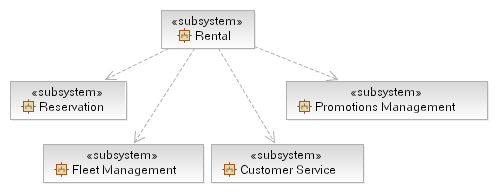
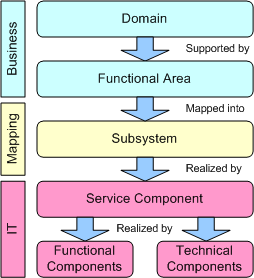
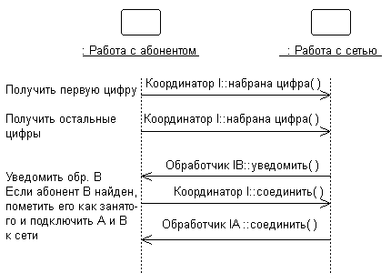
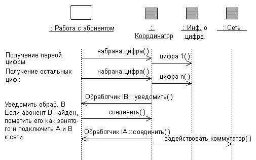
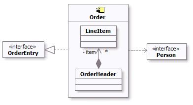
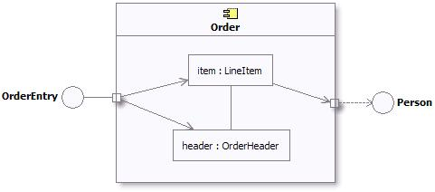

|
Document Subsystem Origin
During Task: Functional Area Analysis we identified a set of subsystems that
corresponded to the input received from a Component Business Map (see Concept: Component Business Modeling). During Process Decomposition, the identified
leaf-level activity nodes (Concept: Business Process Decomposition) may be placed on the subsystems as the
operations or services that the subsystem, as a facade, will provide. The functionality of these operations will be
realized by the service component’s functional components. Also, you may choose to group these operations onto
interfaces that are offered by the subsystem. The operation non-functional requirements will be used to mine out
the technical components and services required within the subsystem.
It is important that the relationship between these identified subsystems and their original source be kept
in-place. In cases where both the business-level and service model work products are in UML, the dependency information
may easily be stored in the models; otherwise, such information should be stored in the Template: Service Model in Word or held in an associated work product.
ISV Considerations: Services may be realized through existing subsystems such as custom applications, software
packages and/or Independent Software Vendors. As the following section explains, in some cases, identification of new
subsystems may involve physical grouping of services based on criteria such as data affinity, cost, performance etc.,
although subsystem identification is usually done top-down during Functional Area Analysis activity. The allocation of
the components to the architectural tiers, in order to satisfy architectural constraints imposed by non-functional
requirements, is explained in Service Realization.
Example
The output from the functional area analysis for an example rental agency was the following table:
|
Domain
|
Functional Area
|
Subsystem
|
Description
|
|
Marketing and Customer Management
|
Customer Service
|
Customer Service
|
Provides all automated functions for the functional area.
|
|
Products
|
Promotions Management
|
Promotions Management
|
Provides all automated functions for the functional area.
|
|
Rental Fleet Logistics
|
Fleet Management
|
Fleet Management
|
Provides all automated functions for the functional area.
|
|
Rentals Management
|
Rental
|
Rental
|
Provides all automated functions for the functional area.
|
|
Rentals Management
|
Reservations
|
Reservations
|
Provides all automated functions for the functional area.
|
|
Rentals Management
|
Pricing
|
Pricing
|
Provides all automated functions for the functional area.
|
The resulting UML model of the subsystems identified above would be the following, note that the subsystem dependencies
are already provided in the model shown below.

For each subsystem either the details described by the Artifact: Design Subsystem should be documented, or may be
captured in the document-format service model (see Template: Service Model in Word), in a form similar to the following.
|
Name
|
Reservation
|
|
Description
|
The Reservation subsystem is used to create and manage car rental reservations.
|
|
Interfaces
|
-
Reserve Vehicle
-
Modify Reservation
-
Get Options Information
-
Confirm Rental Agreement
-
Locate Reservation
-
Cancel Reservation
|
|
Functions
|
-
Reserve Vehicle
-
Modify Reservation
-
Get Options Information
-
Confirm Rental Agreement
-
Locate Reservation
-
Cancel Reservation
|
|
Dependencies
|
None
|
|
Non-Functional Requirements
|
None
|
|
Identify and Apply Service Component Patterns
In the Guideline: Service Component Patterns we introduce not only the different kinds
of components that are commonly used to implement the subsystems identified during this task, but also a set
of patterns that allow for scalable and flexible implementations of these subsystems. The patterns, and of course
additional patterns exist - this is not a complete set - and may be specified as part of the architecture of a project.
Selection of, or customization of, a particular pattern will depend upon:
-
The Functional and Non-Functional Requirements of the solution and specific Subsystem.
-
The Capabilities and Qualities of Service provided by any middleware upon which the components will be deployed.
-
The cost/complexity and benefit trade-off between different patterns.
|
Identify Service Component
Subsystems, in and of themselves, are not IT assets and not deployable into the IT infrastructure; they provide a
bridge between the business and IT perspectives. Each subsystem is realized by one or more Service Components where
a Service Component is an enterprise-scale asset (a managed software element with guaranteed availability, load
balancing, security, performance, and versioning). The Service Component is in turn realized by multiple Functional and
Technical Components according to the diagram below.

Generally each service assigned to a Subsystem will result in a Service Component; Functional and Technical Components
may be shared between Service Components within the same subsystem.
|
Identify Functional Components
Functional components provide additional business function to a service component; in many respects, the capability
provided by a service component is dependent entirely on its functional components and any additional business logic it
implements on top of these.
Functional components are often to be found among Type Managers - components that manage a particular domain element,
for example "Vehicle", "Customer", "Schedule", and so forth. It should be made clear that these domain elements are
more frequently large-grained graphs of data rather than simple structures.
Example
Considering the Rent-a-Car example, the Reservation service component need to be able to pull together details about
the customer, the location they wish to hire from and the vehicles available for the class they specify. Also we need
to be able to determine the customer's rating such that we can provide the correct level of service in the event of
issues such as unavailable vehicles. The following diagram demonstrates the component model for Reservation.

|
Identify Technical Components
Technical, or Infrastructure, components serve to make available horizontal platform capabilities; that is the
capabilities they provide are not specific to the business domain but cut across business domains. These technical
services are frequently provided by middleware products including operating systems and are used either directly by the
service component or by the functional components on which they rely.
Example
In completing the Rent-a-Car component model (see functional component step above) we include two technical components
into the model, one for the Reservation to log the completion of a reservation request and one to denote that the
Vehicle and Location components rely on EJB Services to persist their business data.

Alternatively you can use a tabular format in expressing the required components and their relationship to the services
previously identified, as shown in the figure below.

|
Распределить поведение подсистемы на элементы.
|
Цель:
|
Описать внутреннее поведение подсистемы.
Выявить дополнительные классы проекта и подсистемы проекта, необходимые для удовлетворения
требований к поведению подсистем.
|
Внешнее поведение подсистем определяется, главным образом, их интерфейсами. Если подсистема предоставляет интерфейс,
она обязуется поддерживать все операции, определенные для этого интерфейса. Операция, в свою очередь, может быть
реализована в качестве операции элемента проекта (например, класса
проекта или подсистемы проекта), входящего в подсистему. Для выполнения операции
может требоваться взаимодействие с другими элементами проекта.
Взаимодействие элементов модели в рамках подсистемы должно быть описано с помощью циклограмм, показывающих, как
реализовано поведение подсистемы. Каждая операция интерфейса, предоставляемого подсистемой, должна быть снабжена хотя
бы одной циклограммой. Циклограммы являются составными элементами подсистем и применяются для описания их
внутреннего поведения.
Если поведение подсистемы сильно зависит от состояния и представляет собой одну или несколько нитей управления, лучше
всего для описания такого поведения подойдут конечные автоматы. Конечные автоматы обычно применяются вместе с активными
классами для декомпозиции нитей управления системы (в данном случае - подсистемы) и описываются с помощью диаграмм
состояний (см. Рекомендация:
Диаграмма состояний. В системах реального времени конечные автоматы также применяются для
описания поведения рабочего продукта Рабочий
продукт: Капсула. Внутри подсистемы могут находиться независимые нити выполнения,
представленные активными классами.
В системах реального времени для инкапсуляции таких нитей будет применяться Рабочий продукт: капсула.
Пример:
Взаимодействие подсистем, обеспечивающих определенное поведение системы, можно выразить с помощью следующих циклограмм:

На этой диаграмме показано, как интерфейсы подсистем применяются для выполнения последовательности операций. В
частности, для подсистемы Network Handling указаны конкретные интерфейсы (в данном случае - ICoordinator) и операции,
которые она должна поддерживать. Кроме того, на диаграмме видно, что подсистема NetworkHandling зависит от интерфейсов
IBHandler и IAHandler.
Взглянув внутрь подсистемы, можно увидеть, как реализован интерфейс ICoordinator:

Класс Coordinator выступает в роли посредника для интерфейса ICoordinator и отвечает за обработку операций интерфейса и
координацию его поведения.
На "внутренней" циклограмме показана полная структура классов интерфейса, что должно произойти для выполнения функций
подсистемы, и какие классы отправляют сообщения вовне подсистемы. Такие диаграммы, иллюстрирующие внутреннюю структуру
подсистем, крайне важны для подсистем со сложной структурой. Они упрощают изучение поведения подсистем и повторное
использование подсистем в различных контекстах.
В процессе создания диаграмм "реализации интерфейсов" может возникнуть необходимость создания новых классов и подсистем
для обеспечения требуемого поведения. Этот процесс схож с процессом, определенным в дисциплине анализа вариантов
использования, но вместо вариантов использования в роли объектов анализа выступают операции интерфейса. Для каждой
операции интерфейса нужно установить множество классов (или внутренних подсистем), которые нужны для выполнения
операции. Создайте новые классы (подсистемы) там, где имеющихся классов и подсистем недостаточно для обеспечения
необходимого поведения, но сначала попытайтесь воспользоваться существующими классами.
При создании новых элементов проекта необходимо пересматривать содержание и границы подсистем. Постарайтесь избежать
создания одинаковых классов в разных подсистемах. Наличие таких классов - косвенный признак неоптимального
формулирования границ подсистемы. Регулярно возвращайтесь к задаче Задача:
Определение элементов проекта для коррекции баланса ответственности подсистем.
Иногда полезно создать две отдельные внутренние модели подсистемы, иллюстрирующие подсистему с точки зрения клиентов и
с точки зрения реализаторов. В спецификацию можно включить "идеальные" классы и взаимодействия, для того чтобы описать
поведение подсистемы в терминах идеальных классов и взаимодействий. С другой стороны, спецификация системы для
реализаторов отражает видение реализации системы и может постепенно эволюционировать в реализацию.
Дополнительные сведения о спецификации и реализации подсистемы проекта приведены в разделе Рекомендация по рабочему продукту: Подсистемы проекта, реализация и спецификация
подсистем.
|
Создайте описание элементов подсистемы
|
Цель:
|
Описать внутреннюю структуру подсистемы.
|
Для того чтобы описать внутреннюю структуру подсистемы, создайте одну или несколько диаграмм классов с описанием
элементов подсистем и их взаимосвязей. Одной диаграммы классов должно быть достаточно, хотя для упрощения картины можно
создать несколько диаграмм.
Ниже приведен пример диаграммы класса:

Пример диаграммы класса для системы регистрации заказов.
Внутреннее содержимое подсистемы, смоделированное в виде компонента, можно представить в виде прямоугольника,
обозначающего компонент на диаграмме компонентов. Таким образом можно показать точки взаимодействия этой подсистемы с
внешними объектами через интерфейсы.
Ниже приведен пример диаграммы компонентов, на которой показаны подсистема Order, ее внутренние компоненты,
предоставляемые и необходимые интерфейсы.

Пример диаграммы компонентов подсистемы Order
Поскольку компонент представляет собой структурированный класс, его можно полностью инкапсулировать, разрешив поступление
внешних данных только через порты интерфейсов. Такой подход позволяет повысить точность спецификаций и протоколов
обмена данными компонента. В результате мы получаем связать составные части соединителями и структурировать реализацию
компонента (дополнительные сведения приведены в разделе Концепция:
Структурированный класс).
На следующей иллюстрации показан пример составной диаграммы структуры подсистемы Order с интерфейсами и портами.

Пример составной диаграммы структуры подсистемы Order.
Помимо этого, может понадобиться создать циклограмму для описания всех возможных состояний, в которых может находиться
подсистема (см. раздел Технология:
Циклограмма).
Описание классов подсистемы создается при выполнении задачи Задача:
Проектирование классов.
|
Опишите зависимости подсистемы
|
Цель:
|
Описать интерфейсы, от которых зависит подсистема.
|
Зависимостью между подсистемами называется ситуация, когда элементы одной подсистемы пользуются поведением элементов
другой подсистемы. Для упрощения повторного использования подсистем и сокращения зависимостей при обслуживании
зависимости следует привязывать к конкретным интерфейсам подсистем, а не к подсистемам в целом и не к их
внутренним элементам.
Причин тому две:
-
Элементы модели (включая подсистемы) должны быть взаимозаменяемы при условии, что их поведение одинаково. Поведение
описывается в терминах интерфейсов, поэтому любые обстоятельства, от которых зависит поведение элемента, также
должны быть описаны в терминах интерфейсов.
-
У разработчика должна быть полная свобода в отношении внутреннего поведения подсистем, постольку поскольку
обеспечивается правильное внешнее поведение. Если элемент модели одной подсистемы ссылается на элемент модели
другой подсистемы, разработчик уже не может просто удалить этот элемент модели или распределить его поведение на
другие элементы. В результате система становится более "хрупкой".
Необходимо обеспечить отсутствие прямых зависимостей и связей между элементами модели, находящимися в подсистеме, и
элементами модели, находящимися в других подсистемах. Кроме того, нужно убедиться в отсутствии циклических зависимостей
между подсистемами и интерфейсами: система не может одновременно и предоставлять интерфейс, и зависеть от него.
Зависимости между подсистемами, равно как зависимости между подсистемами и пакетами, можно описать напрямую, как
показано ниже. В данном случае одна подсистема (например, Invoice Management) напрямую зависит от другой (например,
Payment Scheduling Management).

Пример структуры подсистем с непосредственными зависимостями.
Если одну подсистему потенциально можно заменить другой (у подсистем один и тот же набор интерфейсов), можно привязать
зависимость к интерфейсу, предоставляемому подсистемой, а не к самой
подсистеме. Такой подход обеспечивает взаимозаменяемость любых элементов моделей (подсистем и классов), предоставляющих
одни и те же интерфейсы. Управление зависимостями между интерфейсами позволяет разрабатывать гибкие среды с большой
свободой взаимозаменяемости элементов.

Пример структуры подсистем с зависимостями через интерфейсы
|
|